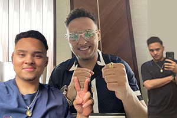

I don't have a traditional pathway when it comes too education and college. I graduated highschool in 2018 than was lost I wasn't sure what to do but I knew that my love for computers was forever evermore
Since I was a kid I've always been tinkering with computers and devices. My first time actually breaking a computer was when I wanted too play a sonic game on my dads first ever gateway desktop that he found
I remember seeing the screen just going blank clicking on stuff and running away. than he took it to the bronx. Specifically to his cousins house and I saw this guy drinking an energy drink and restarting the desktop
But as a kid I thought this was the ultimate repair. Seeing him install windows xp made me think to myself... hey I could do that and better than him and my dad would show me and let me mess with computers he would find
in the trash or at work and let me learn or in other words do whatever and when I would mess up he would come and share his wisdom and I would take that and expand on it and eventually surprise him with a working
computer and sometimes too improve speeds overclock whatever I could, Msconfig and unlock all the processors or use hardrive as VRAM etc, than I remember reading about youtube in a book in elementary school and
that was the Equivalent of a masters degree too me in like 5th grade maybe 6th but around that time and when I went to trade school after graduating because my brother who dropped out of highschool wanted to get his
GED I followed him and entered Coop-Tech where I realized I am actually really, really good at computers compared too my peers and was selected to compete in Skills USA and got 2nd place over a micro error but still good
enough than entered states and failed but that's a story for another time. This is a mini introduction to who I am and my passion of computers and the rest could most likely be in a book I am writing about my life.
